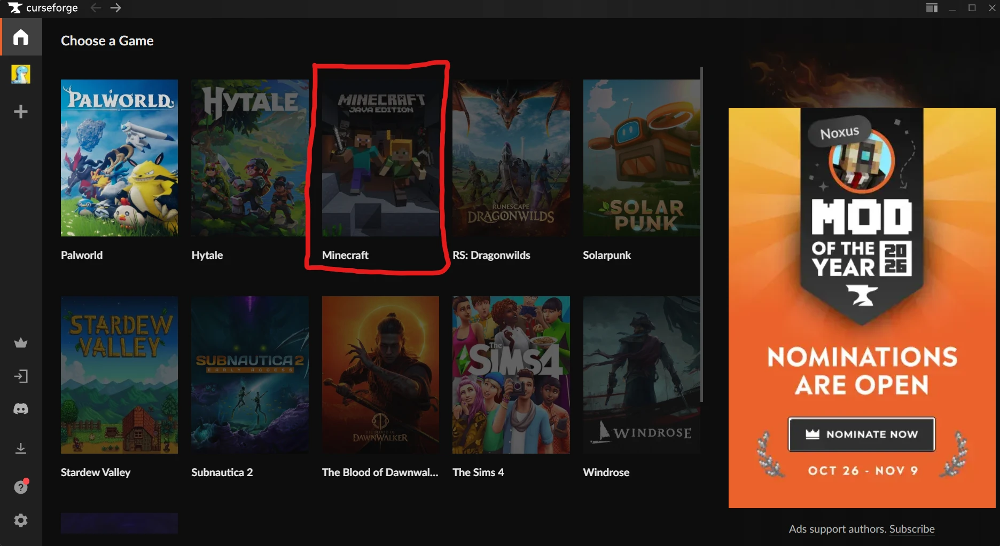
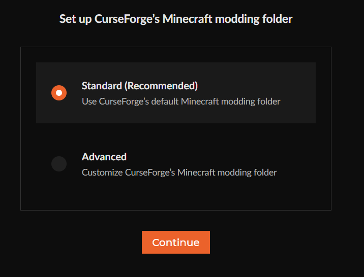
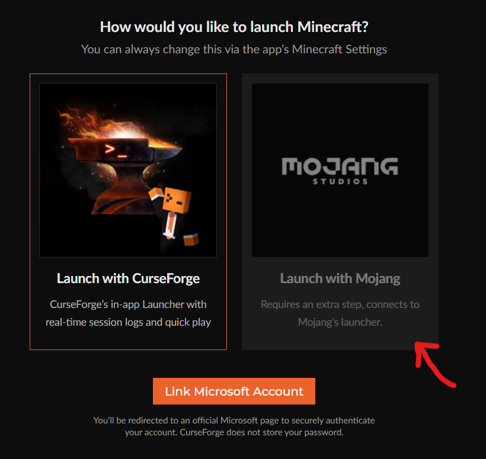
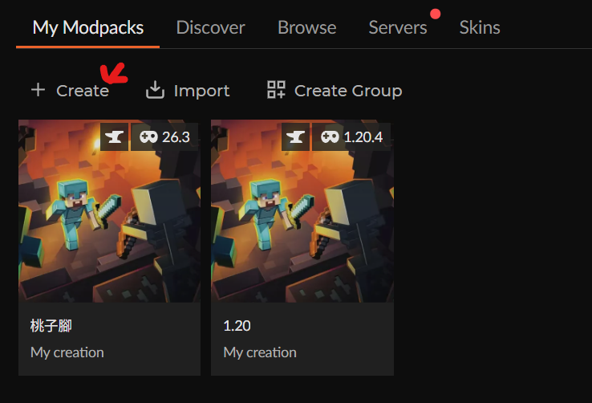
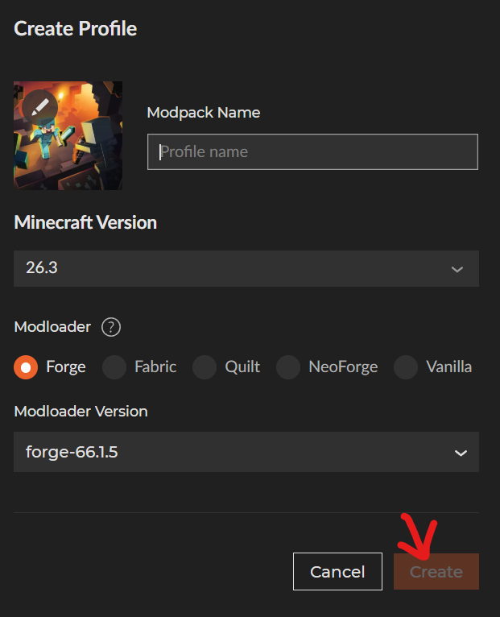
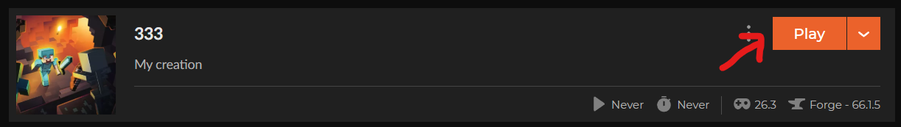
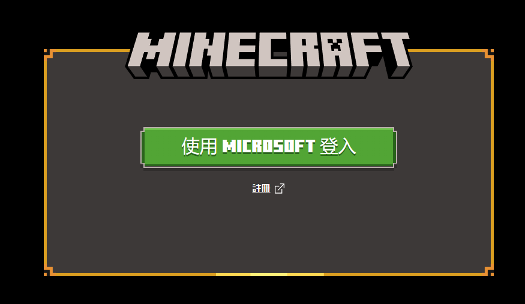

先安裝 CurseForge
在首頁按橘色按鈕下載 CurseForge Windows - Installer.exe，
然後到「下載」資料夾點兩下打開它，等它安裝完成。
選擇遊戲：Minecraft
打開 CurseForge 之後，會看到很多遊戲。
找到紅色框框裡的 Minecraft，點它一下。

設定資料夾
選第一個 Standard (Recommended)（它通常已經幫你選好了），
然後按橘色的 Continue。

選擇怎麼開啟 Minecraft
看紅色箭頭，點右邊的 Launch with Mojang。
這樣 CurseForge 會用 Minecraft 原本的啟動器來開遊戲。

建立自己的遊戲包
在上面的 My Modpacks 分頁，
按紅色箭頭指的 ＋ Create。

幫遊戲包取名字
- 在 Modpack Name 打一個你喜歡的名字（例如你的名字）
- Minecraft Version 和 Modloader 照老師說的選，不知道就不用改
- 按右下角的 Create
💡 沒有打名字的話，Create 按鈕會是暗的，按不下去喔！

開始遊戲！
建立好之後會看到你的遊戲包，
按橘色的 Play 按鈕。
💡 第一次按 Play 要下載一些東西，請耐心等一下。

登入 Microsoft 帳號
Minecraft 啟動器打開後，按綠色的 使用 MICROSOFT 登入，
輸入你的帳號和密碼。
🙋 帳號密碼請自己保管好，不要給別人看。忘記了就舉手問老師！

🎉 完成了！
登入之後就可以開始玩 Minecraft 囉！
⬅️ 回到首頁